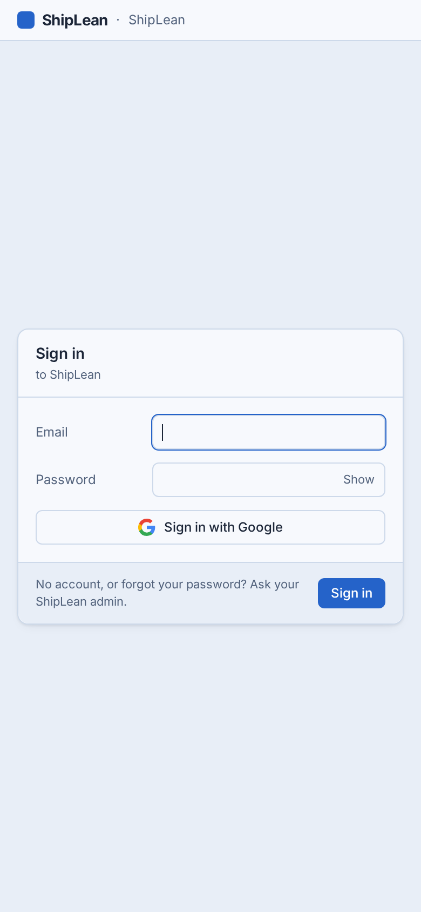
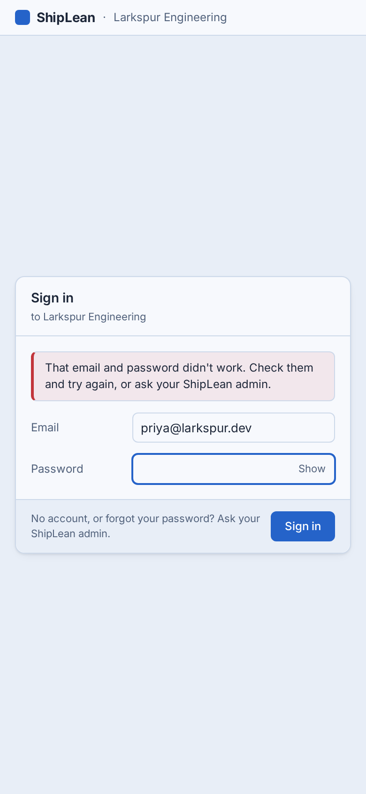
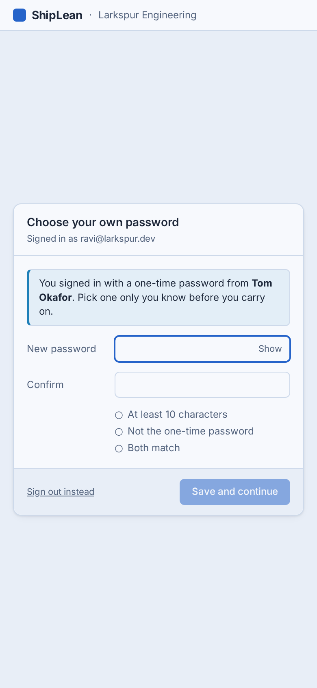
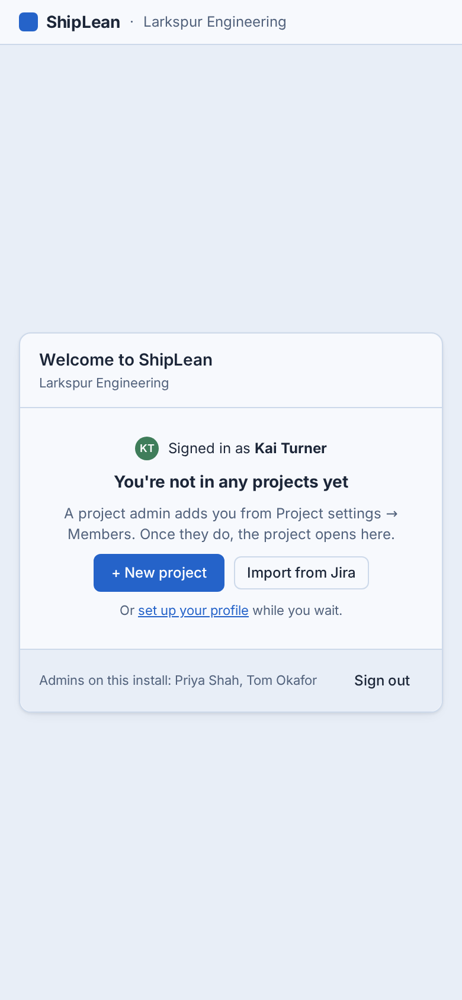

Sign in, the steps right after it (choose your own password, no projects yet) and proxy sign-in, at 900px and below. The phones below are a live mock at 390 × 844 in ShipLean's own tokens: tap into the fields, Show, Sign in. Above 900px nothing changes. Instance settings are out of scope (the story says so).
design/mobile/sign-in.html
Images: design/mobile/images/sign-in*.png
PR ShipLean#69
The first is prod (prod.shiplean.app/login, taken today). The rest are the desktop reference screen (design/screens/signin.html) in a phone window, which the SPA matches. It isn't broken: the 380px card fits. It just isn't a phone page yet.




One treatment for every card on /login: the card starts 16px under the bar with 16px gutters, labels sit above full-width 40px fields at 16px, and the one primary button spans the card under the fields. The help line moves under it, centred. Joel settled each of these on 7 Nov (decisions below); the A-phones show the options turned down.
/login in password mode: sign in, with and without Google, and the notes for failed, signed out, session ended, Google failed and Google refused.?state=change) and No projects (?state=no-projects, with and without project creation).LoginTopBar)./authorize, AuthorizePage.tsx). It's also a signed-out-looking card. Say if you want it here; it's about 1 point more.All in src/ShipLean.Client/src/features/auth/, on top of the SHIP-713 shell's tokens. No API change, unless D8 adds a property.
| File | Change at 900px and below |
|---|---|
LoginPage.tsx | The stage starts at the top (place-items: start center), with safe-area padding at the bottom. 10vh top margin from 600px, so tablets aren't top-heavy. |
LoginTopBar.tsx | --mobile-bar-height plus the top safe area. The instance name is cut with an ellipsis, and left out when it is "ShipLean". |
FormField.tsx | Label above; 40px, 16px text; Show/Hide 32px tall. Email gets inputmode="email", autocapitalize="off", autocorrect="off", spellcheck=false and enterkeyhint (next / go). These attributes are harmless on the desktop, so they apply everywhere. |
SignInForm.tsx | Sign in moves into the body under the fields, full width; the help line stays in the footer. Google goes first, above "or with your email". No autoFocus on a touch screen (matchMedia('(max-width: 900px)')). |
ChangePasswordForm.tsx | Same field and button treatment; the checks list loses its column offset; Sign out instead becomes a centred 32px link in the footer. |
NoProjectsCard.tsx, ProxySignInPage.tsx | Buttons full width and stacked. Sign out moves under the help line. |
GoogleSignInLink.tsx | 40px, full width, 15px text. |
LoginPage.spec.tsx | Page shots at 390 × 844 for each state above (light and dark), plus a check that the inputs compute to 16px and the Show button to 32px. |
The 3-point estimate holds. It's mostly CSS plus one reorder in SignInForm; the baselines are the slow part (hand-run CI, as for the other mobile stories).
auth.signed_in fires for password, Google and proxy sign-ins. With SHIP-805 rule 16 it carries viewport (phone, tablet, desktop).docs/analytics.md: anonymous requests emit nothing).method. That shows whether putting Google first moved people to it.screen.viewed per week: how often a phone session starts with a sign-in.Settled 7 Nov 2026: Joel kept every recommendation, D1 to D8. The form below still works if you want to change one.